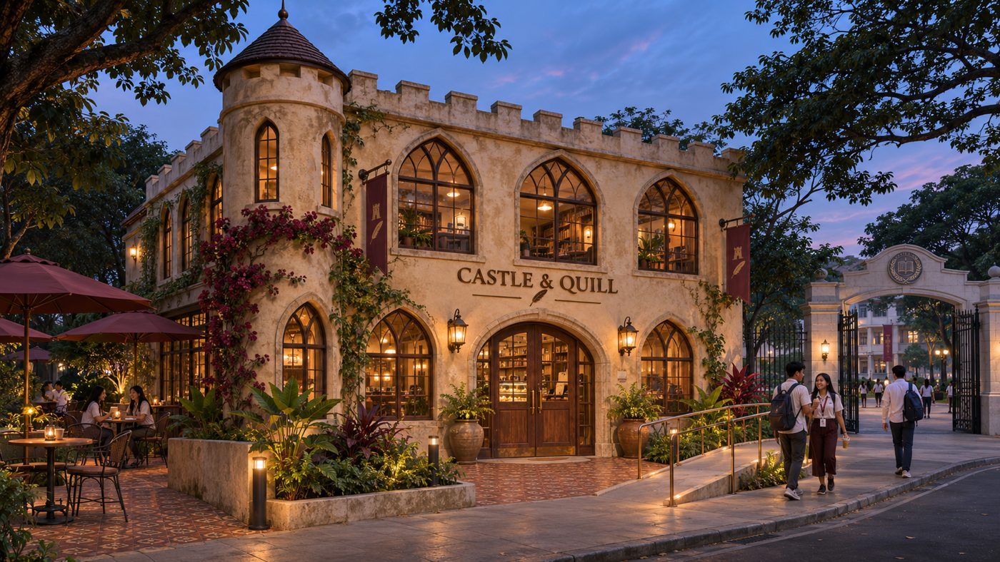
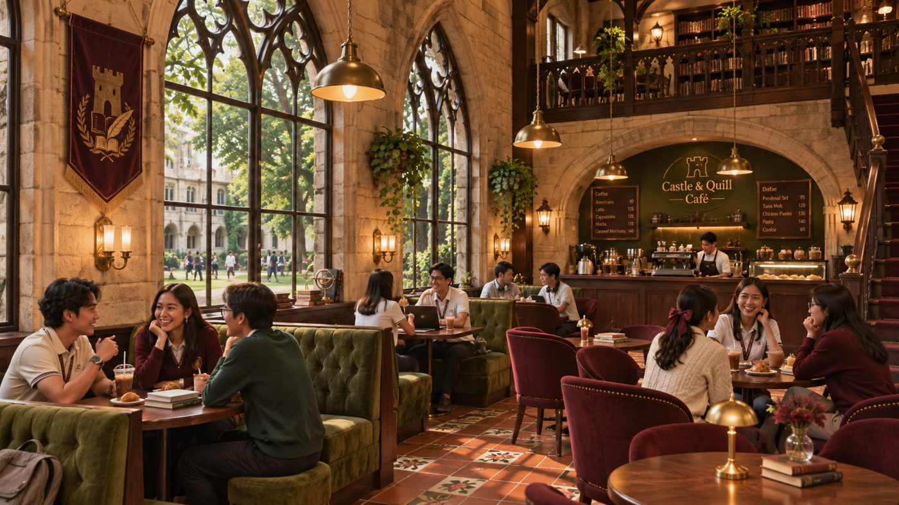

Coffee and comfort food
Fresh coffee, cheesy pandesal, and hearty rice meals priced for student budgets.

Castle & Quill Café turns a coffee break into a small adventure. Order a latte, grab a velvet booth, and climb the stairs to the Quill Library when it is time to focus.
Fresh coffee, cheesy pandesal, and hearty rice meals priced for student budgets.
The Quill Library has long oak tables, brass lamps, power outlets, and a glass-walled group study room.
Booths for groups, patio tables under the trees, and a vintage photo booth for your squad.

Library hours may extend during exam weeks.
The tour starts outside the castle-style building just off campus. It then moves to the meals and merienda (cheese-topped rolls, a grilled sandwich, and a rice bowl), past the Quill Photo Booth by the stairs, and ends on the second floor in the Quill Library study area.
Press play for the short bell melody that rings when a fresh tray of pandesal comes out of the oven.